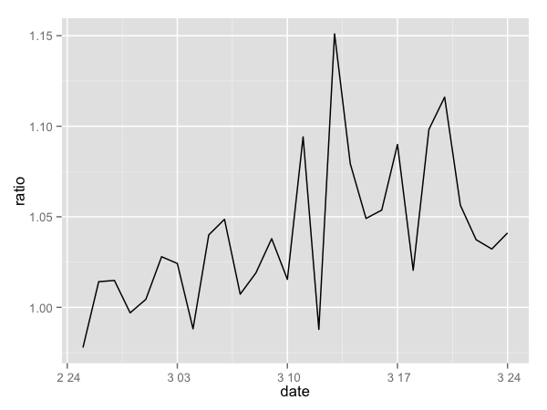

巨量資料
掀起生活、工作和思考方式的革新
Large Scale Learning in R
wush978.github.io/phorum-R-201406
Wush Wu
Taiwan R User Group
巨量資料很熱
為了發揮資料的價值，我們要向資料學習
大資料不重要，大價值才重要
但是資料太多，學習時就遇到困難
挖資訊，變得很慢
畫張圖給老闆就花了我一整天了
請不要忘記「抽樣」這招，但是怎麼抽？
Large Scale Learning in R
今天，希望能分享跨過門檻的經驗
和所有目前用R 遇到資料太大的同好分享

關於講者
臺大電機所博士生
和宇匯知識科技合作建立廣告推薦引擎
今天的內容是我和Y.-C. Juan, Y. Zhuang的共同工作

不是教大家用R 處理GB/TB/PB等級的資料
多大的資料才算大資料？
只要當你「覺得」，R 處理資料太慢了
希望能在這次演講中學到解決的方法
找出慢的理由
記憶體不夠了
迴圈的效能太差了
資料讀取的太慢了
演算法的時間複雜度太差了
找出慢的理由
整體測試
Rprof
Rprof示範(參考stackoverflow)
一個大data.frame
n <- 1000
x <- data.frame(group =
sample(letters[1:4],
n, replace=TRUE),
condition =
sample(LETTERS[1:10], n,
replace = TRUE),
data = rnorm(n))
合理的算法
marginal.means.1 <- aggregate(
data ~ group + condition,
data = x, FUN=mean)
不合理的算法
marginal.means.2 <-
marginal.means.1[NULL,]
row.counter <- 1
for (condition in levels(x$condition)) {
for (group in levels(x$group)) {
# 省略掉...
}
}
使用Rprof
Rprof("profile1.out", line.profiling=TRUE)
eval(parse(file =
"http://pastebin.com/download.php?i=KjdkSVZq",
keep.source=TRUE))
Rprof(NULL)
解讀profile1.out
summaryRprof("profile1.out", lines = "show")$by.self
| self.time | self.pct | total.time | total.pct | |
|---|---|---|---|---|
| download.php?i=KjdkSVZq#17 | 4.48 | 96.97 | 4.48 | 96.97 |
| download.php?i=KjdkSVZq#16 | 0.06 | 1.30 | 0.06 | 1.30 |
| download.php?i=KjdkSVZq#6 | 0.04 | 0.87 | 0.04 | 0.87 |
| < no location> | 0.02 | 0.43 | 0.02 | 0.43 |
| download.php?i=KjdkSVZq#3 | 0.02 | 0.43 | 0.02 | 0.43 |
怎麼知道記憶體不夠了？
查詢物件的記憶體用量
object.size(iris)
## 7088 bytes
利用作業系統的工具查R 的記憶體用量
- Windows : Ctrl + Alt + Delete
- Linux : htop

物件的複製
Copy On Write

利用tracemem指令可以追蹤物件的複製
data.table、tracemem使用範例
library(data.table)
data(mtcars)
tracemem(mtcars)
## [1] "<0x106c4a408>"
set(mtcars, j = "mpg", value = NULL)
tracemem(mtcars)
## [1] "<0x106c4a408>"
mtcars[, "mpg"] <- NULL
## tracemem[0x106c4a408 -> 0x106c8c4b0]: eval eval withVisible withCallingHandlers doTryCatch tryCatchOne tryCatchList tryCatch try handle evaluate_call evaluate in_dir block_exec call_block process_group.block process_group withCallingHandlers process_file knit ifelse force in_dir parse_page slidify
## tracemem[0x106c8c4b0 -> 0x106faaa00]: [<-.data.frame [<- eval eval withVisible withCallingHandlers doTryCatch tryCatchOne tryCatchList tryCatch try handle evaluate_call evaluate in_dir block_exec call_block process_group.block process_group withCallingHandlers process_file knit ifelse force in_dir parse_page slidify
Rcpp的Modify In Place範例
#include <Rcpp.h>
using namespace Rcpp;
//[[Rcpp::export]]
SEXP fill(NumericVector v, double value) {
v.fill(value);
return v;
}
a <- numeric(100)
tracemem(a)
## [1] "<0x107401170>"
invisible(fill(a, 1))
head(a)
## [1] 1 1 1 1 1 1
a[] <- 2
## tracemem[0x107401170 -> 0x10733eaa0]: eval eval withVisible withCallingHandlers doTryCatch tryCatchOne tryCatchList tryCatch try handle evaluate_call evaluate in_dir block_exec call_block process_group.block process_group withCallingHandlers process_file knit ifelse force in_dir parse_page slidify
head(a)
## [1] 2 2 2 2 2 2
記憶體不夠怎麼辦？
- 買記憶體或買新電腦吧！（四萬塊可以買到64G）
- 使用資料庫系統，更有效率的使用硬碟
- 使用更有效率的資料結構：
- 矩陣大部分是0 的時候，使用Matrix套件的Sparse Matrix結構
- 大量重復的字串資料，可試著使用factor物件來節省記憶體
library(Matrix)
data(KNex)
class(KNex$mm)[1]
## [1] "dgCMatrix"
object.size(KNex$mm)
## 109336 bytes
mm <- as(KNex$mm, "matrix")
class(mm)
## [1] "matrix"
object.size(mm)
## 10537968 bytes
加快運算速度
改善的方法
利用compiler::cmpfun來將函數編譯成byte code
使用別人寫好的高效能套件
使用parallel套件來運用CPU的多核心
使用Rcpp套件來快速開發C++程式提升效能
使用更快的BLAS套件
Compiler 效能比較
library(compiler)
f <- function(n, x = 1) for (i in 1:n) x = 1/(1 + x)
lf <- cmpfun(f)
N <- 1e+06
library(rbenchmark)
benchmark(f(N, 1), lf(N, 1))
## test replications elapsed relative user.self sys.self user.child
## 1 f(N, 1) 100 74.54 3.714 73.89 0.299 0
## 2 lf(N, 1) 100 20.07 1.000 19.67 0.315 0
## sys.child
## 1 0
## 2 0
包成套件後，預設會使用byte code
DESCRIPTION: ByteCompile
R's BLAS v.s. Apple's BLAS (可參考RMacOSX-FAQ)
| Operation | Dimension | BLAS | Apple.s.BLAS | |
|---|---|---|---|---|
| 1 | Creation, transp., deformation | 2500x2500 | 1.04 | 1.05 |
| 2 | normal random matrix | 2400x2400 | 0.17 | 0.2 |
| 3 | sorting | 7M | 0.67 | 0.68 |
| 4 | Cross-product | 2800x2800 | 11.91 | 0.55 |
| 5 | linear regr. | 3000x3000 | 5.48 | 0.33 |
| 6 | FFT | 2.4M | 0.45 | 0.45 |
| 7 | Eigenvalues | 640x640 | 0.82 | 0.42 |
| 8 | Determinant | 2500x2500 | 3.84 | 0.45 |
| 9 | Cholesky Decomp. | 3000x3000 | 4.56 | 0.32 |
| 10 | Inverse | 1600x1600 | 3.77 | 1.25 |
Parallel & Bootstrap
boot(df, f, R = 100, parallel = "multicore", ncpus = 4)
2 boot(df, f, R = 100, parallel = "no")
replications elapsed relative user.self sys.self user.child
1 20 311.831 1.000 6.388 0.560 876.979
2 20 622.117 1.995 620.335 0.112 0.000
sys.child
1 5.26
2 0.00
改善資料讀取的速度
加強資料讀取的效能
儲存成壓縮格式（把硬碟讀取時間變成CPU的時間）
SSD
分散式讀取
Spark

Single Machine
2014-04-17 19:20:02 INFO::Table 201404071810 is existed
2014-04-17 19:20:02 INFO::Table 201404071850 is existed
...
2014-04-17 19:21:37 INFO::parsing 047/20140417/ExposeLog201404171720.txt ...
2014-04-17 19:21:40 INFO::parsing 025/20140417/ExposeLog201404171720.txt ...
2
...
2014-04-17 19:27:22 INFO::parsing 017/PersonLog201404171730.txt
2014-04-17 19:27:46 INFO::parsing 017/PersonLog201404171730.txt
...
2014-04-17 19:46:14 INFO::{
"ETag": "\"1467fb79cc5ea56dc156ab37eeb413cb\""
}
單台機器讀取

多台機器讀取

演算法
如何改善演算法及實作的效能
改善資料結構
改善最佳化的演算法
查詢的效能比較
(取自ptt)
從iris選取Sepal.Width為3.5的row
m: data.frame
m2: data.table with indexing
m3: matrix
200倍的iris(3萬rows)
expr replications elapsed relative
4 filter(m, Sepal.Width == 3.5) 100 0.05 1.0
5 filter(m2, Sepal.Width == 3.5) 100 0.14 2.8
7 m[fmatch(m$Sepal.Width, 3.5, nomatch = 0), ] 100 0.25 5.0
1 m[m$Sepal.Width == 3.5, ] 100 0.44 8.8
8 m2[fmatch(m2$Sepal.Width, 3.5, nomatch = 0)] 100 0.33 6.6
3 m2[J(3.5)] 100 0.17 3.4
6 m2[list(3.5)] 100 0.14 2.8
9 m3[m3[, 2] == 3.5, ] 100 0.22 4.4
2 subset(m, Sepal.Width == 3.5) 100 0.55 11.0
5000倍的iris(75萬rows)
expr replications elapsed relative
4 filter(m, Sepal.Width == 3.5) 100 1.46 5.214
5 filter(m2, Sepal.Width == 3.5) 100 0.84 3.000
7 m[fmatch(m$Sepal.Width, 3.5, nomatch = 0), ] 100 6.46 23.071
1 m[m$Sepal.Width == 3.5, ] 100 10.71 38.250
8 m2[fmatch(m2$Sepal.Width, 3.5, nomatch = 0)] 100 7.37 26.321
3 m2[J(3.5)] 100 0.28 1.000
6 m2[list(3.5)] 100 0.34 1.214
9 m3[m3[, 2] == 3.5, ] 100 4.96 17.714
2 subset(m, Sepal.Width == 3.5) 100 13.67 48.821
實務經驗分享
廣告無所不在


從大量的瀏覽記錄中，學習出推薦方法

具體而言，
以下是「從資料學習」的一個起點
Logistic Regression
\[P( y | x ) = \frac{1}{1 + e^{- y w^T x}}\]
\(y\): 有沒有點擊
\(x\): 相關參數
\(w \in \mathbb{R}^d\): 模型
手上有這些資料
\[(y_1, x_1), (y_2, x_2), ...(y_n, x_n)\]
\(n \sim 10^9\) 系統更新後指數會再往上跑
\(d \sim 10^4\) 至 \(10^7\)
Regularized Loss:
\[f(w) = \frac{1}{2} w^T w + C \sum_{i=1}^n {log(1 + e^{-y_i w^T x_i})}\]
定出 \((y_1, x_1), ...\) 之後， 理想的模型 \(w\) 是讓 \(f\) 最小的點*
$f$要小
$w$要短(非0的要少)*
讓我們看看一個演算法的研究方向
從牛頓法開始
如果已經有模型 $w_k$，我們要找更好地點
找\(s\) 使得以下式子最小：
\[\nabla f(w_k) ^T s + \frac{1}{2} s^T \nabla^2 f(w_k) s\]
對 \(s\) 微一下
$s$要滿足
\[\nabla^2 f(w_k) s = - \nabla f(w_k)\]
Hessian矩陣 \(\nabla^2 f(w) \in \mathbb{R}^{n \times n}\)
但是可以寫成
\[I_n + CX^T D X\]
\(X\) 是資料矩陣
\(D\) 是對角化矩陣
可以用Conjugate Gradient的方法解
\[s + C X^T D X s = - \nabla f(w_k)\]
只要算 Hessian和vector的乘積
我們不需要知道Hessian就可以找\(w\)
矩陣和向量的乘法可以平行化!

理論搞懂了，要實做！
Matrix在重複計算Hessian太慢了
要改進
Rcpp再度救援
辛苦寫出來，也不知道對不對
有R 在手邊，馬上比較小資料的結果
我還想要更快
嘗試比較其他BLAS
沒有比我們目前的快
nnz = 1.000000e+06, rows = 1.000000e+05, cols = 1.000000e+03, density = 1.000000e-02, times = 100, nr_threads = 1
generating data...done 453ms
CSR Xv: 388ms
CSR XTv: 288ms
CSR X^TDXv: 488ms
CSR X^TDXv (ACC): 367ms
CSR Xv (MKL): 468ms
CSR XTv (MKL): 482ms
CSR X^TDXv (MKL): 529ms
CSR Xv (NIST): 398ms
CSR XTv (NIST): 461ms
error: 0.000000
終於跨過資料量的門檻了...
該看看資料了！
資料越大，結果就會越好嗎？

不同的模型對預測會有影響嗎？
因子的組合

實驗結果
| auc | Regularization | FeatureSet | DayEffect | |
|---|---|---|---|---|
| 1 | 1.0394 | 1 | A | 09:00:00 |
| 2 | 1.0233 | 10 | A | 09:00:00 |
| 3 | 1.0181 | 20 | A | 09:00:00 |
| 4 | 1.0326 | 1 | A | 16:00:00 |
| 5 | 1.0196 | 10 | A | 16:00:00 |
| 6 | 1.0125 | 20 | A | 16:00:00 |
| 7 | 1.0174 | 1 | A | 20:00:00 |
| 8 | 1.0057 | 10 | A | 20:00:00 |
| 9 | 1.0000 | 20 | A | 20:00:00 |
| 10 | 1.0436 | 1 | B | 09:00:00 |
| 11 | 1.0277 | 10 | B | 09:00:00 |
| 12 | 1.0215 | 20 | B | 09:00:00 |
| 13 | 1.0406 | 1 | B | 16:00:00 |
| 14 | 1.0269 | 10 | B | 16:00:00 |
| 15 | 1.0203 | 20 | B | 16:00:00 |
| 16 | 1.0217 | 1 | B | 20:00:00 |
| 17 | 1.0088 | 10 | B | 20:00:00 |
| 18 | 1.0017 | 20 | B | 20:00:00 |
分析
感謝R 強大的分析功能
| row.names Estimate | Std. Error | t value | Pr(> |t|) | |
|---|---|---|---|---|
| (Intercept) | 1.0343 | 0.0009 | 1165.2725 | 0.0000 |
| Regularization10 | -0.0139 | 0.0009 | -15.6506 | 0.0000 |
| Regularization20 | -0.0202 | 0.0009 | -22.7578 | 0.0000 |
| FeatureSetB | 0.0049 | 0.0007 | 6.7933 | 0.0000 |
| DayEffect20:00 | -0.0162 | 0.0009 | -18.2476 | 0.0000 |
| DayEffect9:00 | 0.0035 | 0.0009 | 3.9816 | 0.0018 |
平均來說FeatureSet B 好 \(0.5\%\)

成果

革命尚未成功，同志仍需努力
Online Logistic Regression
更快
更有彈性
更多因子
TRON v.s. FTRL

總結
從大量的數據學出價值，我們需要
提出問題
提出模型描述問題
運用工程能力實做方法
分析資料
評估與比較
Q&A